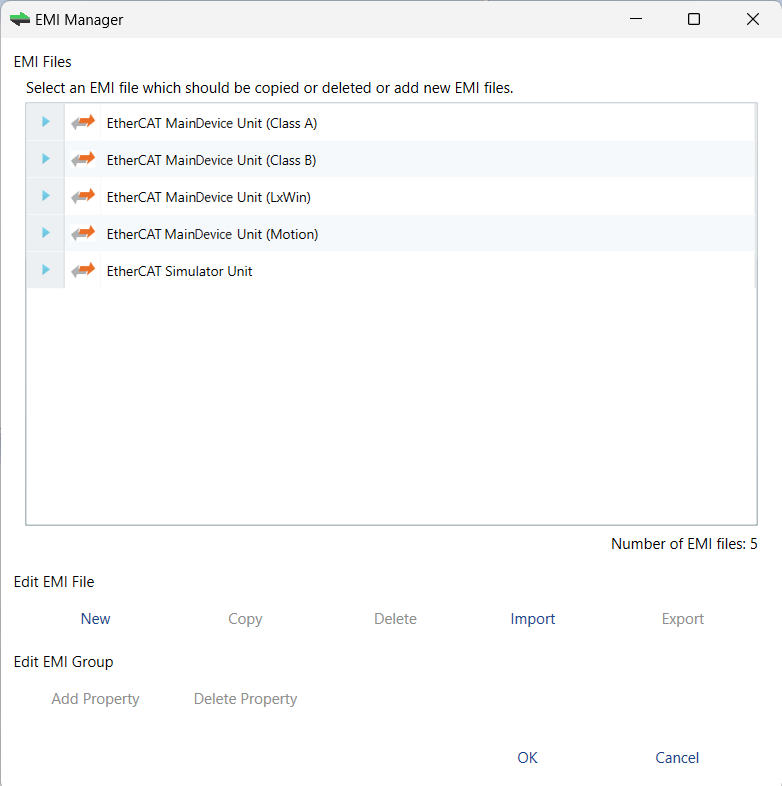
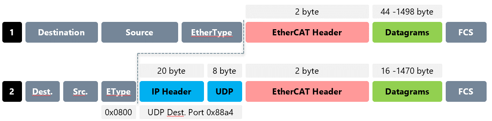

The EMI Manager dialog box is opened when you click on the EMI-Manager command in the File menu.
This dialog box is used to administrate EtherCAT Main-device Information (EMI) files*.

EMI Files; Lists all the EMI files available.
Edit EMI File
New; Adds a new EMI file.
Copy; Copies the selected EMI file.
Delete; Deletes the select EMI file.
Import; Imports an EMI file into the list.
Export; Exports the selected EMI file.
Edit EMI Group
Add Property; Adds properties to the selected EMI group.
Delete Property; Deletes the properties of the selected EMI group.
(*) EMI files are files which specify the Main-device features. You can with it restrict options and dialog box to the features supported by the control system. For example, available cycle times, support of scan for MDP modules or DC synchronization.
By default EtherCAT Configuration Tool includes two files in read-only:
EtherCATMaindevice_ClassA.emi; EMI template which is prepared for configuring a Class A Main-device.
EtherCATMaindevice_ClassB.emi; EMI template which is prepared for configuring a Class B Main-device.
With this dialog box you can:
Customize EtherCAT Configuration Tool by creating a new EMI file by using the Edit EMI File commands detailed above.
Add new properties to the Parameters group, which is by default empty.
Find here all the EMI entries supported during an EMI file administration:
Main-device Group:
Display Group; Shows or hides group.
Lock Group; Locks or unlocks group.
Name of Main-device Unit; Default Main-device unit name.
Show Name of Main-device Unit; If enabled, it allows you to view and change the name of the Main-device unit.
Lock Name of Main-device Unit; If enabled, it prohibits you to change the name of the Main-device unit.
Cycle Time; Default cycle time.
Show Cycle Time; If enabled, it allows you to view and change the cycle time.
Lock Cycle Time; If enabled, it prohibits you to change the cycle time.
Frequency; Default frequency.
Show Frequency; If enabled, it allows you to view and change the frequency.
Lock Frequency; If enabled, it prohibits you to change the frequency.
List Values of Frequency; Enter there the allowed values of frequency.
Cycle Time Mode; Enter there the cycle time mode: 0 = Cycle time, 1 = Frequency.
Init Command Retries; Init command retries.
Maximal Sub-device Count; Enter there the maximal count of Sub-devices which are allowed to configure.
Sub-debice Start Address; Enter there the default start address for all Sub-devices.
Scan for MDP Sub-devices; Enables for activating MDP-Scan if it is supported from the Sub-devices.
PDO Upload; Enables for activating PDO upload during scan if it is supported from Sub-devices.
Byte-Align Process Data Image; If enabled, process data image is byte aligned and not as small as possible.
Edit Complete Variable Name; If enabled, it allows you to edit the complete variable name.
Process Image Layout; Enters process image layout features:
0: Default.
0x1: With protocol data.
0x2: With VLAN tag.
0x4: Without frame alignment.
0x8: Alphabetic pot order.
0x10: Compatibility to ENI spec v1.0.0.
0x20: Moves AL Status command to the end.
0x40: Disable command splitting.
0x80: Compatibility to ENI spec v1.0.1
Output Port Vendor ID; Enter output port vendor ID of the Main-device: 0 = All vendors, 1..n = Specific vendor.
Word-Aligned EhterCAT Datagrams; If enabled, the EtherCAT datagrams is word aligned.
Cyclic Frame Layout; Enter cyclic frame layout mode: 0 = Default, 1 = Single logical command per frame.
Ethernet Type UDP:

Remove DC NOP Command; Does not include NOP Command in ENI.
Cable Red Active; Sets disable LRW for all Sub-devices to use cable redundancy.
Local System:
Display Group; Shows or hides group.
Lock Group; Locks or unlocks group.
Network Adapter; Enter index of Network Adapter in the Network Adapter List.
Show Network Adapter; If enabled, it allows you to view and change the Network Adapter.
Lock Network Adapter; If enabled, it prohibits you to change the Network Adapter.
DCM on; By default DCM is disabled. To enable it, set the DCM on property to ON.
Remote System:
Display Group; Shows or hides group.
Lock Group; Locks or unlocks group.
Protocol; Select protocol for remote system.
Show Protocol; If enabled, it allows you to view and change the protocol.
Lock Protocol; If enabled, it prohibits you to change the protocol.
IP Address; Enter IP address for remote system.
Show IP Address; If enabled, it allows you to view and change the IP address.
Lock IP Address; If enabled, it prohibits you to change the IP address.
Port; Enter Port for remote system.
Show Port; If enabled, it allows you to view and change the port.
Lock Port; If enabled, it prohibits you to change the port.
Main-device Instance; Enter Main-device instance number.
Show Main-device Instance; If enabled, it allows you to view and change the Main-device instance.
Lock Main-device Instance; If enabled, it prohibits you to change the Main-device instance.
Offline Diagnosis:
Display Group; Shows or hides group.
Lock Group; Locks or unlocks group.
Simulator Functions:
Display Group; Shows or hides group.
Lock Group; Locks or unlocks group.
Distributed Clocks:
Display Group; Shows or hides group.
Clock Adjustment; Enter clock adjustment value: 0 = default, 1 = Main-device shift, 2 = Sub-device shift.
Lock Clock Adjustment; If enabled, it prohibits you to change the clock adjustment.
Show Clock Adjustment; If enabled, clock adjustment is visible.
Continuous Propagation Compensation; Enter default value of continuous propagation compensation.
Show Continuous Propagation Compensation; If enabled, it allows you to change the value of continuous propagation compensation.
Sync Window Monitoring; Enter default value of sync Window monitoring.
Show External Mode; If enabled, it allows you to use an external sync device as reference clock.
System Time 64 Bit; Enter default value of system time 64 bit.
Features:
AoE; If enabled, Main-device supports AoE.
EoE; If enabled, Main-device supports EoE.
FoE; If enabled, Main-device supports FoE.
SoE; If enabled, Main-device supports SoE.
VoE; If enabled, Main-device supports VoE.
Export Variables; If enabled, it allows you to export variables.
Show Enable Column; Shows column for enable variables on XML export.
Generate Sub-device Name with Type; If enabled, the type of Sub-devices is added to Sub-device names when generating ENI file.
Lock Variables; Locks or unlocks variables for editing in diagnosis mode.
Show Variables Chart; If enabled, it allows you to view the chart of a variable.
Show Variables Comments; If enabled, it allows you to view and edit the comments of a variable.
Allow E-Bus as HC Head; If enabled, E-Bus is allowed as HC Head.
ENI Deployment:
Yes; Something is done with the ENI file after export.
No; Nothing is done with the ENI file.
Ask; You are asked to deploy the ENI file.
Deployment Mode; 0 = Copy the path, 1 = Execute batch at path.
Deployment Path; Path to copy the ENI file or to batch for execution.
Hot Connect; If enabled, the Main-device supports hot connect.
Scripts:
Display Group; Shows or hides the Scripts tab.
P1
Scan Start Script 1; First script executed before scanning.
Scan Start Script 2; Second script executed before scanning.
Scan Stop Script 3; First script executed after scanning.
Scan Stop Script 4; Second script executed after scanning.
P2
Diag Start Script 1; First script executed before switch to diag.
Diag Start Script 2; Second script executed before switch to diag.
Diag Stop Script 3; First script executed after switch to diag.
Diag Stop Script 4; Second script executed after switch to diag.
Parameters:
User defined properties, which is written into ENI file and can be interpreted by the application inside EtherCAT Main-Device.